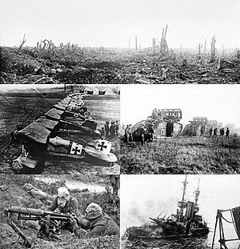

The First World War began with an unprecedented outpouring of support towards Britain from within the mainstream political leadership, contrary to initial British fears of an Indian revolt. India contributed massively to the British war effort by providing men and resources. About 1.3 million Indian soldiers and laborers served in Europe, Africa and the Middle East, while both the Indian government and the princes sent large supplies of food, money and ammunition. However, Bengal and Punjab remained hotbeds of anti colonial activities. Nationalism in Bengal, increasingly closely linked with the unrests in Punjab, was significant enough to nearly paralyze the regional administration, whilst failed conspiracies were made by revolutionaries to trigger nationalist revolt in India.
None of the revolutionary conspiracies had significant impact inside India. The prospect of subversive violence and its effect on the popular war effort drew support amongst Indian population for special measures against anti-colonial activities in the form of Defence of India act 1915, and no major mutinies occurred. However, the war-time conspiracies did lead to profound fears of insurrection among British officials, preparing them to use extreme force to frighten the Indians into submission.
In the aftermath of the First World War, high casualty rates, soaring inflation compounded by heavy taxation, a widespread influenza epidemic and the disruption of trade during the war escalated human suffering in India.
The pre-war nationalist movement revived as moderate and extremist groups within the Congress submerged their differences in order to stand as a unified front. They argued their enormous services to the British Empire during the war demanded a reward, and demonstrated the Indian capacity for self-rule. In 1916, the Congress succeeded in forging the Lucknow Pact, a temporary alliance with the Muslim League over the issues of devolution of political power and the future of Islam in the region.
The British themselves adopted a "carrot and stick" approach in recognition of India's support during the war and in response to renewed nationalist demands. In August 1917, Edwin Montagu, the secretary of state for India, made the historic announcement in Parliament that the British policy for India was "increasing association of Indians in every branch of the administration and the gradual development of self-governing institutions with a view to the progressive realization of responsible government in India as an integral part of the British Empire." The means of achieving the proposed measure were later enshrined in the Government of India Act, 1919, which introduced the principle of a dual mode of administration,or diarchy, in which both elected Indian legislators and appointed British officials shared power. The act also expanded the central and provincial legislatures and widened the franchise considerably. Diarchy set in motion certain real changes at the provincial level: a number of non-controversial or "transferred" portfolios, such as agriculture, local government, health, education, and public works, were handed over to Indians, while more sensitive matters such as finance, taxation, and maintaining law and order were retained by the provincial British administrators.